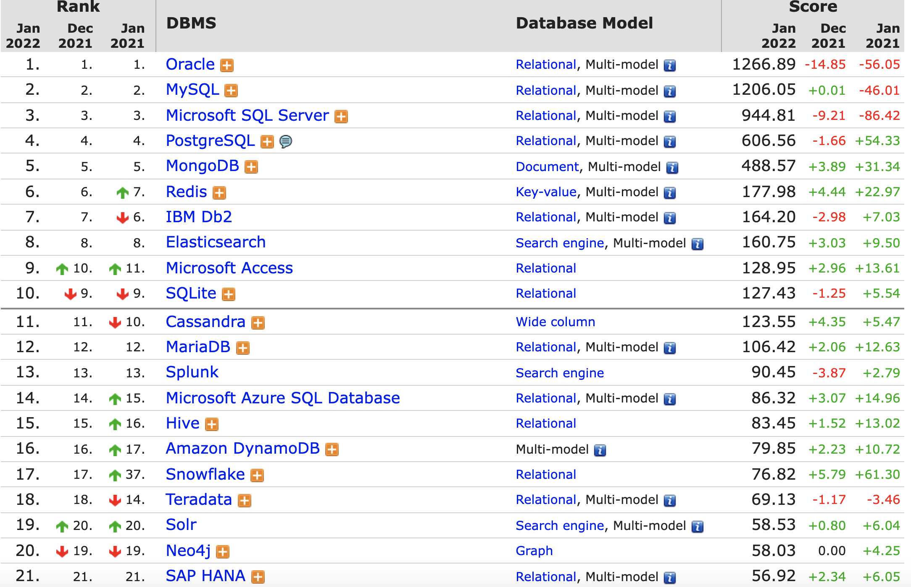
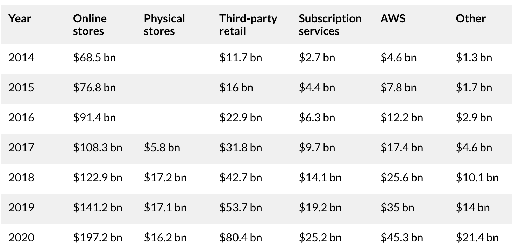

Basic Concepts¶
Source: Fundamentals of Database Systems (Elmasri)
Applied Database Technologies¶
Database management systems are ranked according to their popularity. 
Source: https://db-engines.com/en/ranking
As of June 2021, the most popular commercial database management system (DBMS) in the world was Oracle, MySQL and Microsoft SQL server. Free and open-source DBMSs such as PostgreSQL and Apache Cassandra remain highly competitive. The most popular open source database management system (DBMS) in the world was MySQL. https://www.statista.com/statistics/809750/worldwide-popularity-ranking-database-management-systems/#statisticContainer (Shanhong Liu June 2021)
What is Database?¶
A database is a collection of related data. For example, consider the names, telephone numbers, and addresses of the people you know. A database has the following properties:
A database represents some aspect of the real world, sometimes called the miniworld or the universe of discourse (UoD). Changes to the miniworld are reflected in the database.
A database is a logically coherent collection of data with some inherent meaning. A random assortment of data cannot correctly be referred to as a database.
A database is designed, built, and populated with data for a specific purpose. It has an intended group of users and some preconceived applications in which these users are interested.
Database Management System¶
A database management system (DBMS) is a computerized system that enables users to create and maintain a database. The DBMS is a general-purpose software system that facilitates the processes of defining, constructing, manipulating, sharing, protecting and maintaning.
Defining: specifying the data types, structures, and constraints of the data to be stored in the database
Meta-data: descriptive information (catalog or dictionary)
Constructing: storing the data on some storage medium
Manipulating: querying the database to retrieve specific data, updating the database to reflect changes in the miniworld, and generating reports from the data
Sharing: accessing database simultaneously by multiple users and programs
Protection: system protection against hardware or software malfunction (or crashes) and security protection
Maintainance: allowing system to evolve over time
Example: Amazon¶
Let’s look at one of the largest commercial databases. Amazon is responsible for 386 billion revenue in 2020.
Note
Originally launched as an online bookstore in 1995, Amazon spent its first few years as a brokerage for other sellers, similar to eBay. However, founder Jeff Bezos always envisioned it would be an “everything store” and quickly added other items to the e-commerce platform.
Over 200 million customers subscribe to Amazon Prime worldwide, with 147 million in the US alone
Amazon Prime Video had 175 million users in 2021, while Prime Music reached 55 million in 2020
55 million Amazon Echo devices were sold in 2020
Amazon runs two models for businesses: 1P and 3P. For 1P, Amazon is the retailer and the business operates as a wholesale supplier. For 3P, the business has more control over pricing, packaging and delivery.

Source: https://www.businessofapps.com/data/amazon-statistics/
Database Components¶
Entity:
a person, place, event, or thing about which data is collected
Relationships:
how the entities are related together
Attributes:
characteristics of the entity
Tables (= relations):
Rows
a single entity
Columns
attributes
Types of Databases¶
Below is the main difference between NoSQL and SQL:
Parameter |
SQL |
NOSQL |
|---|---|---|
Definition |
SQL databases are primarily called RDBMS or Relational |
|
Design for |
Traditional RDBMS uses SQL syntax and queries to analyze and get the data for further insights. They are used for OLAP systems. |
NoSQL database system consists of various kind of database technologies. These databases were developed in response to the demands presented for the development of the modern application. |
Query Language |
Structured query language (SQL) |
No declarative query language |
Type |
SQL databases are table based databases |
NoSQL databases can be document based, key-value pairs, graph databases |
Schema |
SQL databases have a predefined schema |
NoSQL databases use dynamic schema for unstructured data. |
Ability to scale |
SQL databases are vertically scalable |
NoSQL databases are horizontally scalable |
Examples |
Oracle, Postgres, and MS-SQL. |
MongoDB, Redis, Neo4j, Cassandra, Hbase |
Best suited for |
An ideal choice for the complex query intensive environment. |
It is not good fit for complex queries. |
Hierarchical data storage |
SQL databases are not suitable for hierarchical data storage. |
More suitable for the hierarchical data store as it supports key-value pair method. |
Variations |
One type with minor variations. |
Many different types which include key-value stores, document databases, and graph databases. |
Development Year |
It was developed in the 1970s to deal with issues with flat file storage |
Developed in the late 2000s to overcome issues and limitations of SQL databases. |
Open-source |
A mix of open-source like Postgres & MySQL, and commercial like Oracle Database. |
Open-source |
Importance |
It should be used when data validity is super important |
Use when it is more important to have fast data than correct data |
Other terms
Multimedia database: The wide availability of photo and video technology on cellphones and other devices has made it possible to store images, audio clips, and video streams digitally. These types of files are becoming an important component of multimedia databases
Geographic information systems (GISs): can store and analyze maps, weather data, and satellite images.
Data warehouses and online analytical processing (OLAP) systems: used in many companies to extract and analyze useful business information from very large databases to support decision making.